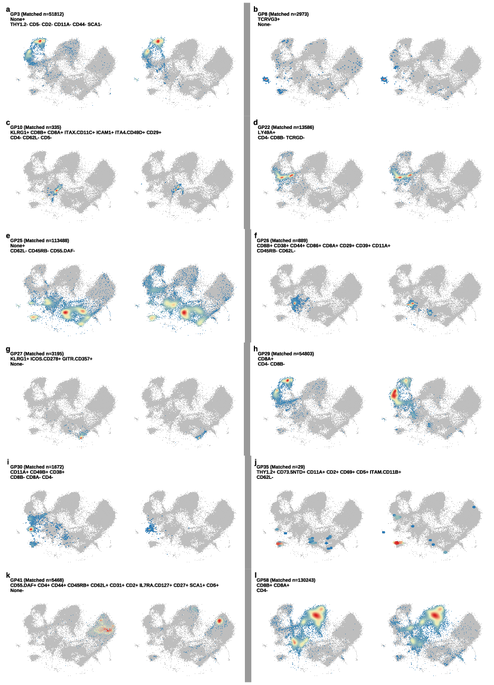
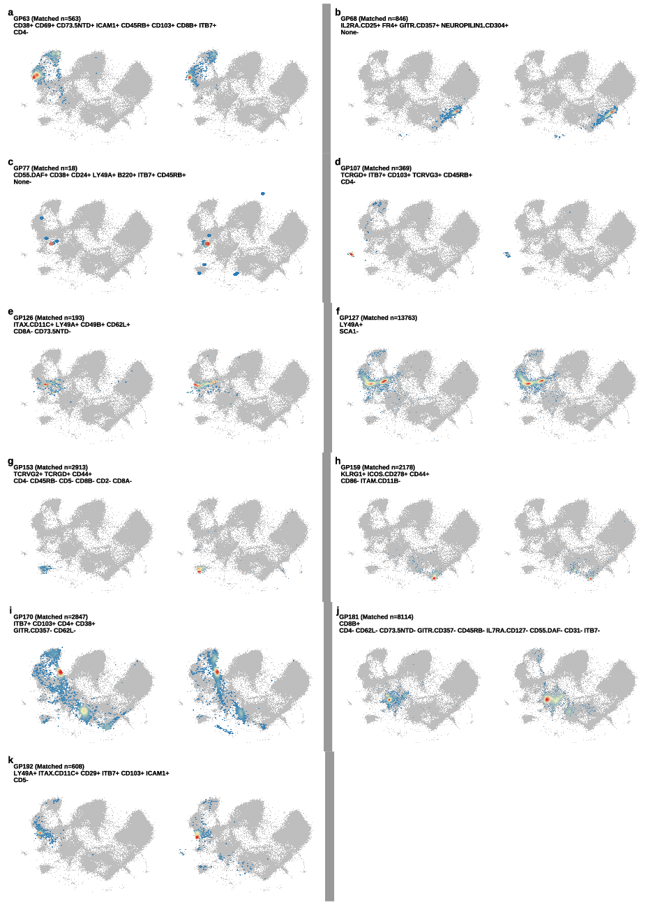

Last updated: 2026-07-02
Checks: 7 0
Knit directory:
immgenT-GP-analysis/analysis/
This reproducible R Markdown analysis was created with workflowr (version 1.7.2). The Checks tab describes the reproducibility checks that were applied when the results were created. The Past versions tab lists the development history.
Great! Since the R Markdown file has been committed to the Git repository, you know the exact version of the code that produced these results.
Great job! The global environment was empty. Objects defined in the global environment can affect the analysis in your R Markdown file in unknown ways. For reproduciblity it’s best to always run the code in an empty environment.
The command set.seed(1) was run prior to running the
code in the R Markdown file. Setting a seed ensures that any results
that rely on randomness, e.g. subsampling or permutations, are
reproducible.
Great job! Recording the operating system, R version, and package versions is critical for reproducibility.
Nice! There were no cached chunks for this analysis, so you can be confident that you successfully produced the results during this run.
Great job! Using relative paths to the files within your workflowr project makes it easier to run your code on other machines.
Great! You are using Git for version control. Tracking code development and connecting the code version to the results is critical for reproducibility.
The results in this page were generated with repository version be7d6ae. See the Past versions tab to see a history of the changes made to the R Markdown and HTML files.
Note that you need to be careful to ensure that all relevant files for
the analysis have been committed to Git prior to generating the results
(you can use wflow_publish or
wflow_git_commit). workflowr only checks the R Markdown
file, but you know if there are other scripts or data files that it
depends on. Below is the status of the Git repository when the results
were generated:
Ignored files:
Ignored: analysis/.DS_Store
Ignored: analysis/.Rhistory
Ignored: analysis/assets/.DS_Store
Ignored: code 2/
Ignored: data
Ignored: figures/final-selected/.DS_Store
Ignored: figures/final-selected/bits/.DS_Store
Ignored: figures/final-selected/bits/Figure 1/.DS_Store
Ignored: figures/final-selected/bits/Figure 2/.DS_Store
Ignored: figures/final-selected/bits/Figure 3/.DS_Store
Ignored: figures/final-selected/bits/Figure 4/.DS_Store
Ignored: figures/final-selected/bits/Figure 6/.DS_Store
Ignored: figures/final-selected/bits/Figure 7/.DS_Store
Ignored: figures/final-selected/bits/Figure S1/.DS_Store
Ignored: figures/final-selected/bits/Figure S2/.DS_Store
Ignored: figures/final-selected/bits/Figure S3/.DS_Store
Ignored: figures/final-selected/bits/Figure S6/.DS_Store
Ignored: figures/final-selected/bits/Figure S7/.DS_Store
Untracked files:
Untracked: analysis/assets/Figure1/hist_active_cells_per_GP.png
Untracked: analysis/assets/Figure1/hist_active_genes_prop_per_GP.png
Untracked: analysis/assets/Figure1/scatter_e_active_cells_vs_genes.png
Unstaged changes:
Modified: README.md
Modified: analysis/assets/Figure1/1A.png
Modified: analysis/assets/Figure1/1C.png
Modified: analysis/assets/Figure1/1D.png
Modified: analysis/assets/Figure1/1E.png
Modified: analysis/assets/Figure1/1F.png
Modified: analysis/assets/Figure1/1G.png
Modified: analysis/assets/Figure1/1H.png
Modified: analysis/assets/Figure1/1I.png
Modified: analysis/assets/Figure2/2A.png
Modified: analysis/assets/Figure2/2B.png
Modified: analysis/assets/Figure2/2C.png
Modified: analysis/assets/Figure2/2D.png
Modified: analysis/assets/Figure2/2E.png
Modified: analysis/assets/Figure2/2F.png
Modified: analysis/assets/Figure2/2G.png
Modified: analysis/assets/Figure2/2H.png
Modified: analysis/assets/Figure2/2I.png
Modified: analysis/assets/Figure2/2J.png
Modified: analysis/assets/Figure2/2K.png
Modified: analysis/assets/Figure2/2L.png
Modified: analysis/assets/Figure2/2M.png
Modified: analysis/assets/Figure3/3c.png
Modified: analysis/assets/Figure3/3d.png
Modified: analysis/assets/Figure3/3e.png
Modified: analysis/assets/Figure3/3f.png
Modified: analysis/assets/Figure3/3g.png
Modified: analysis/assets/Figure4/4a.png
Modified: analysis/assets/Figure4/4b.png
Modified: analysis/assets/Figure4/4c.png
Modified: analysis/assets/Figure4/4d.png
Modified: analysis/assets/Figure4/4e.png
Modified: analysis/assets/Figure6/6b.png
Modified: analysis/assets/Figure6/6c.png
Modified: analysis/assets/Figure6/6d.png
Modified: analysis/assets/Figure6/6e.png
Modified: analysis/assets/Figure6/6f.png
Modified: analysis/assets/Figure6/6g.png
Modified: analysis/assets/Figure6/6h.png
Modified: analysis/assets/Figure6/6i.png
Modified: analysis/assets/Figure6/6j.png
Modified: analysis/assets/Figure6/6k.png
Modified: analysis/assets/FigureS1/S1A.png
Modified: analysis/assets/FigureS1/S1B.png
Modified: analysis/assets/FigureS1/S1C.png
Modified: analysis/assets/FigureS1/S1D.png
Modified: analysis/assets/FigureS2/S2A.png
Modified: analysis/assets/FigureS2/S2B.png
Modified: analysis/assets/FigureS2/S2C.png
Modified: analysis/assets/FigureS3/s3c.png
Modified: analysis/assets/FigureS3/s3d.png
Modified: analysis/assets/FigureS3/s3e.png
Modified: analysis/assets/FigureS3/s3f.png
Modified: analysis/assets/FigureS3/s3g.png
Modified: analysis/assets/FigureS3/s3h.png
Modified: analysis/assets/FigureS6/s6-1.png
Modified: analysis/assets/FigureS6/s6-2.png
Modified: code/R/activation_shared_setup.R
Modified: code/R/cross_gp_helpers.R
Modified: code/R/gated_protein_helpers.R
Modified: code/R/lineage_plots.R
Modified: code/R/plot_utils.R
Modified: code/R/setup_data.R
Modified: code/R/tf_network.R
Modified: code/README.md
Modified: code/pipeline/01_extract_data.R
Modified: code/pipeline/02_compute_auc.R
Modified: code/pipeline/04_protein_projection.R
Modified: code/pipeline/05_igt_validation.R
Modified: figures/generated/Figure 1/1A.pdf
Modified: figures/generated/Figure 1/1C.pdf
Modified: figures/generated/Figure 1/1D.pdf
Modified: figures/generated/Figure 1/1E.pdf
Modified: figures/generated/Figure 1/1F.pdf
Modified: figures/generated/Figure 1/1G.pdf
Modified: figures/generated/Figure 1/1H.pdf
Modified: figures/generated/Figure 1/1I.pdf
Modified: figures/generated/Figure 1/hist_active_cells_per_GP.pdf
Modified: figures/generated/Figure 1/hist_active_genes_prop_per_GP.pdf
Modified: figures/generated/Figure 1/scatter_e_active_cells_vs_genes.pdf
Modified: figures/generated/Figure 2/2A.pdf
Modified: figures/generated/Figure 2/2B.pdf
Modified: figures/generated/Figure 2/2C.pdf
Modified: figures/generated/Figure 2/2D.pdf
Modified: figures/generated/Figure 2/2E.pdf
Modified: figures/generated/Figure 2/2F.pdf
Modified: figures/generated/Figure 2/2G.pdf
Modified: figures/generated/Figure 2/2H.pdf
Modified: figures/generated/Figure 2/2I.pdf
Modified: figures/generated/Figure 2/2J.pdf
Modified: figures/generated/Figure 2/2K.pdf
Modified: figures/generated/Figure 2/2L.pdf
Modified: figures/generated/Figure 2/2M.pdf
Modified: figures/generated/Figure 3/3c.pdf
Modified: figures/generated/Figure 3/3d.pdf
Modified: figures/generated/Figure 3/3e.pdf
Modified: figures/generated/Figure 3/3f.pdf
Modified: figures/generated/Figure 3/3g.pdf
Modified: figures/generated/Figure 4/4a.pdf
Modified: figures/generated/Figure 4/4b.pdf
Modified: figures/generated/Figure 4/4c.pdf
Modified: figures/generated/Figure 4/4d.pdf
Modified: figures/generated/Figure 4/4e.pdf
Modified: figures/generated/Figure 6/6b.pdf
Modified: figures/generated/Figure 6/6c.pdf
Modified: figures/generated/Figure 6/6d.pdf
Modified: figures/generated/Figure 6/6e.pdf
Modified: figures/generated/Figure 6/6f.pdf
Modified: figures/generated/Figure 6/6g.pdf
Modified: figures/generated/Figure 6/6h.pdf
Modified: figures/generated/Figure 6/6i.pdf
Modified: figures/generated/Figure 6/6j.pdf
Modified: figures/generated/Figure 6/6k.pdf
Modified: figures/generated/Figure S1/S1A.pdf
Modified: figures/generated/Figure S1/S1B.pdf
Modified: figures/generated/Figure S1/S1C.pdf
Modified: figures/generated/Figure S1/S1D.pdf
Modified: figures/generated/Figure S2/S2A.pdf
Modified: figures/generated/Figure S2/S2B.pdf
Modified: figures/generated/Figure S2/S2C.pdf
Modified: figures/generated/Figure S3/s3c.pdf
Modified: figures/generated/Figure S3/s3d.pdf
Modified: figures/generated/Figure S3/s3e.pdf
Modified: figures/generated/Figure S3/s3f.pdf
Modified: figures/generated/Figure S3/s3g.pdf
Modified: figures/generated/Figure S3/s3h.pdf
Modified: figures/generated/Figure S6/s6-1.pdf
Modified: figures/generated/Figure S6/s6-2.pdf
Modified: script/Figure1.R
Modified: script/Figure2.R
Modified: script/Figure3.R
Modified: script/Figure4.R
Modified: script/Figure6.R
Modified: script/FigureS1.R
Modified: script/FigureS2.R
Modified: script/FigureS3.R
Modified: script/FigureS6.R
Modified: script/README.md
Modified: script/TableS1.R
Note that any generated files, e.g. HTML, png, CSS, etc., are not included in this status report because it is ok for generated content to have uncommitted changes.
These are the previous versions of the repository in which changes were
made to the R Markdown (analysis/FigureS6.Rmd) and HTML
(docs/FigureS6.html) files. If you’ve configured a remote
Git repository (see ?wflow_git_remote), click on the
hyperlinks in the table below to view the files as they were in that
past version.
| File | Version | Author | Date | Message |
|---|---|---|---|---|
| Rmd | be7d6ae | Ziang Zhang | 2026-07-02 | Simplify layout: drop old code/script folders, rename |
| html | 5a79883 | Ziang Zhang | 2026-07-02 | Build site. |
| Rmd | 2b0e445 | Ziang Zhang | 2026-07-02 | Fix GitHub source links to point at the new |
| html | cf1d0ac | Ziang Zhang | 2026-07-02 | Build site. |
| Rmd | 06b2461 | Ziang Zhang | 2026-07-02 | Initial commit: immgenT-GP-analysis |
| html | 06b2461 | Ziang Zhang | 2026-07-02 | Initial commit: immgenT-GP-analysis |
Both pages are produced by script/FigureS6.R,
which shares its CITE-seq setup and gating logic with Figure 6c-f via
code/R/citeseq_shared_setup.R and
code/R/gated_protein_helpers.R. The code below is shown for
reference (not re-executed on this page, since this script takes roughly
a minute and a half to render ~25 GPs x 2 embeddings each); the images
are its pre-rendered output.
# Figure S6. GP loadings recover protein-gated populations across GPs.
#
# Extension of Figure 6c-f to all well-aligned GPs (see
# figures/final-selected/bits/Figure S6/FigureS6_caption.md), shown as two
# gallery pages (s6-1 and s6-2). For each GP, cells are shown twice on the
# same MDE embedding: left, cells passing the GP's curated protein gate;
# right, an equally sized set of cells with the highest GP loading.
#
# Source: ported from gated_protein_loading_plot.R's live gallery
# section (the ~450 preceding lines of commented-out single-GP exploratory
# calls are dropped -- they never produced a saved output).
library(ggplot2)
library(dplyr)
library(patchwork)
library(Matrix)
data_path <- "data/"
figure_path <- "figures/generated/Figure S6/"
source("code/R/gated_protein_helpers.R")
source("code/R/citeseq_shared_setup.R")# GPs shown in main Figure 6 (panels 6c-6f) are excluded from this gallery.
GPs_fig6 <- c("GP171", "GP23", "GP12", "GP80")
other_GPs <- setdiff(well_aligned_gps, GPs_fig6)
# A few GPs get slightly larger highlighted points for visibility even at
# high cell counts.
enlarge_gps <- c("GP8", "GP30", "GP170", "GP107")
plots_all <- lapply(other_GPs, function(gp) {
k_name <- paste0("K", sub("^GP", "", gp))
plot_gated_gp_vs_protein(
gp_name = k_name,
df_markers = df_markers2,
protein_mat = protein_mat_normalized_lognorm,
loading_mat = L_pm_for_gating,
mde_emb = mde_result,
missing_threshold_action = "skip",
threshold_df = threshold_results_subset_manual,
exclude_cells = c(thymocyte_cells, proliferating_cells, miniverse_cells),
selected_proteins = select_proteins,
loading_q = NULL,
min_pointsize = if (gp %in% enlarge_gps) 3L else 0L
)
})
v_bar <- ggplot() + theme_void() + theme(plot.background = element_rect(fill = "grey60", color = NA))
# Sorted gallery: GPs in numerical order, one PDF per page (2 pages here),
# 2 GP-units per row x 6 rows = 12 GPs per page; panels labeled a, b, c...
sort_idx <- order(as.integer(sub("^GP", "", other_GPs)))
plots_sorted <- plots_all[sort_idx]
n_pages_sorted <- ceiling(length(plots_sorted) / 12)
for (page_idx in seq_len(n_pages_sorted)) {
idx_start <- (page_idx - 1) * 12 + 1
idx_end <- min(page_idx * 12, length(plots_sorted))
page_plots <- plots_sorted[idx_start:idx_end]
n_on_page <- length(page_plots)
labeled_page_plots <- lapply(seq_len(n_on_page), function(i) {
unit <- page_plots[[i]]
p1_labeled <- unit[[1]] + labs(tag = letters[i]) + theme(plot.tag = element_text(size = 14, face = "bold"))
p1_labeled + unit[[2]] + plot_layout(ncol = 2)
})
rows_list <- lapply(1:6, function(r) {
i_left <- (r - 1) * 2 + 1
i_right <- (r - 1) * 2 + 2
gp_left <- if (i_left <= n_on_page) labeled_page_plots[[i_left]] else plot_spacer()
gp_right <- if (i_right <= n_on_page) labeled_page_plots[[i_right]] else plot_spacer()
(gp_left | v_bar | gp_right) + plot_layout(widths = c(1, 0.03, 1))
})
combined <- wrap_plots(rows_list, ncol = 1)
# cairo_pdf() does not reliably truncate/overwrite an existing file of a
# different size in place -- remove any stale output first.
out_page <- paste0(figure_path, sprintf("s6-%d.pdf", page_idx))
if (file.exists(out_page)) unlink(out_page)
graphics.off()
cairo_pdf(out_page, width = 13, height = 18)
showtext::showtext_begin()
print(combined)
showtext::showtext_end()
dev.off()
}
| Version | Author | Date |
|---|---|---|
| 06b2461 | Ziang Zhang | 2026-07-02 |

| Version | Author | Date |
|---|---|---|
| 06b2461 | Ziang Zhang | 2026-07-02 |
Fig. S6. Extension of Figure 6c-f to all well-aligned GPs, shown as two gallery pages (s6-1 and s6-2). For each GP, cells are shown twice on the same MDE embedding: left, cells passing a protein gate built from the GP’s curated marker signature (positive markers above, negative below), with the gate size reported as “Matched n”; right, an equally sized set of cells with the highest GP loading. Highlighted cells are colored by two-dimensional density and all other cells are grey; thymocytes, proliferating, and “miniverse” cells are excluded. Each panel is labeled with its GP and protein signature.
sessionInfo()R version 4.5.1 (2025-06-13)
Platform: aarch64-apple-darwin20
Running under: macOS Sequoia 15.6.1
Matrix products: default
BLAS: /System/Library/Frameworks/Accelerate.framework/Versions/A/Frameworks/vecLib.framework/Versions/A/libBLAS.dylib
LAPACK: /Library/Frameworks/R.framework/Versions/4.5-arm64/Resources/lib/libRlapack.dylib; LAPACK version 3.12.1
locale:
[1] en_CA/en_CA/en_CA/C/en_CA/en_CA
time zone: Asia/Tokyo
tzcode source: internal
attached base packages:
[1] stats graphics grDevices utils datasets methods base
loaded via a namespace (and not attached):
[1] vctrs_0.7.3 cli_3.6.6 knitr_1.50 rlang_1.2.0
[5] xfun_0.55 stringi_1.8.7 otel_0.2.0 promises_1.5.0
[9] jsonlite_2.0.0 workflowr_1.7.2 glue_1.8.1 rprojroot_2.1.1
[13] git2r_0.36.2 htmltools_0.5.9 httpuv_1.6.16 sass_0.4.10
[17] rmarkdown_2.30 evaluate_1.0.5 jquerylib_0.1.4 tibble_3.3.0
[21] fastmap_1.2.0 yaml_2.3.12 lifecycle_1.0.5 whisker_0.4.1
[25] stringr_1.6.0 compiler_4.5.1 fs_1.6.6 Rcpp_1.1.1-1.1
[29] pkgconfig_2.0.3 later_1.4.4 digest_0.6.39 R6_2.6.1
[33] pillar_1.11.1 magrittr_2.0.5 bslib_0.9.0 tools_4.5.1
[37] cachem_1.1.0